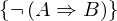
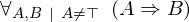
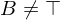
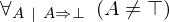
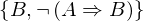
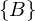

Show the Proof¶
In [1]:
import proveit
# Automation is not needed when only showing a stored proof:
proveit.defaults.automation = False # This will speed things up.
proveit.defaults.inline_pngs = False # Makes files smaller.
%show_proof
Out[1]:
| step type | requirements | statement | ||
|---|---|---|---|---|
| 0 | generalizaton | 1 | ⊢  | |
| 1 | instantiation | 2, 3 |  ⊢  | |
 : :  , : , : | ||||
| 2 | axiom | ⊢  | ||
| proveit.logic.boolean.implication.untrueAntecedentImplication | ||||
| 3 | instantiation | 4, 5 | ⊢  | |
| : | ||||
| 4 | theorem | ⊢  | ||
| proveit.logic.boolean.implication.notTrueViaContradiction | ||||
| 5 | hypothetical reasoning | 6 | ⊢  | |
| 6 | instantiation | 7, 8, 9 |  ⊢  | |
:  | ||||
| 7 | theorem | ⊢  | ||
| proveit.logic.boolean.negation.negationContradiction | ||||
| 8 | hypothetical reasoning | 10 |  ⊢ | |
| 9 | assumption | ⊢  | ||
| 10 | assumption | ⊢ | ||